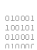

**APPNAME** Web Access
View & Download Files
Navigate files stored on your iPhone or iPod touch with **APPNAME**.
 Clicking on an icon or filename will view or download that file.
 Clicking on a directory navigates to it.
Clicking on a directory navigates to it.
Clicking this arrow will back up a directory.
Files and directories can not be renamed or deleted using web access.
Upload Files
Upload files to the current **APPNAME** directory.
Click the
or
button to add a file.
Up to 20 files can be queued for upload.
Files are uploaded when the
button is pressed--not when they are added to the upload queue. Be sure to upload your list!
NOTE: Navigating to a new directory or viewing a file will clear the upload queue!
iPhone Optimized Page
A simpler version of this web access page designed for an iPhone or iPod touch.